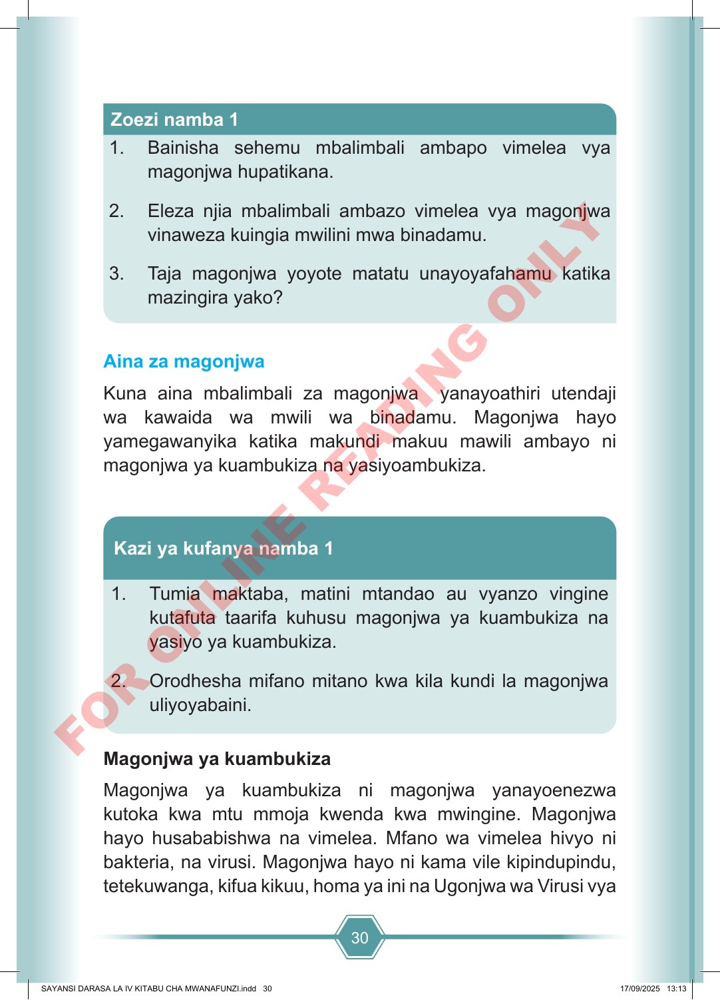

30 1. Bainisha sehemu mbalimbali ambapo vimelea vya magonjwa hupatikana. 2. Eleza njia mbalimbali ambazo vimelea vya magonjwa vinaweza kuingia mwilini mwa binadamu. 3. Taja magonjwa yoyote matatu unayoyafahamu katika mazingira yako? Zoezi namba 1 Aina za magonjwa Kuna aina mbalimbali za magonjwa yanayoathiri utendaji wa kawaida wa mwili wa binadamu. Magonjwa hayo yamegawanyika katika makundi makuu mawili ambayo ni magonjwa ya kuambukiza na yasiyoambukiza. 1. Tumia maktaba, matini mtandao au vyanzo vingine kutafuta taarifa kuhusu magonjwa ya kuambukiza na yasiyo ya kuambukiza. 2. Orodhesha mifano mitano kwa kila kundi la magonjwa uliyoyabaini. Kazi ya kufanya namba 1 Magonjwa ya kuambukiza Magonjwa ya kuambukiza ni magonjwa yanayoenezwa kutoka kwa mtu mmoja kwenda kwa mwingine. Magonjwa hayo husababishwa na vimelea. Mfano wa vimelea hivyo ni bakteria, na virusi. Magonjwa hayo ni kama vile kipindupindu, tetekuwanga, kifua kikuu, homa ya ini na Ugonjwa wa Virusi vya SAYANSI DARASA LA IV KITABU CHA MWANAFUNZI.indd 30 SAYANSI DARASA LA IV KITABU CHA MWANAFUNZI.indd 30 17/09/2025 13:13 17/09/2025 13:13 F O R O N L I N E R E A D I N G O N L Y